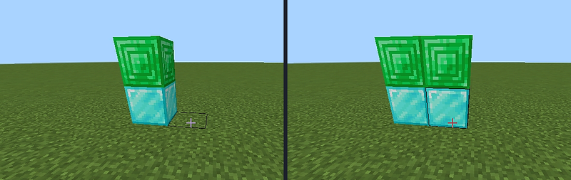
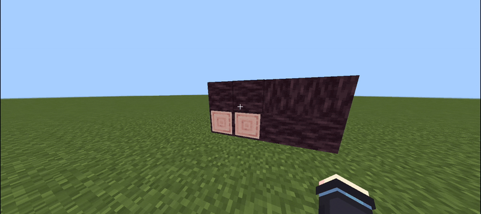
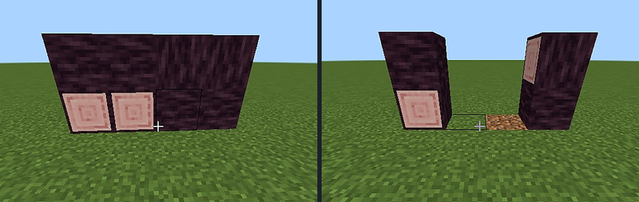

Decoy Doors
Two halves, two disguises. Each half of a decoy door resolves its camouflage independently.
gg:super_door⧉ · gg:super_door_rs⧉
The four-step resolution
01
Hinge side first
Look at the wall on the hinge side at that half’s height.
02
Opposite side
If that is empty, look at the opposite side.
03
Upper copies lower
If the upper half finds nothing, it copies the lower half.
04
Floor fallback
If there is no wall at all, both halves copy the floor block — which is how you get a diamond bottom and an emerald top in the same door.

Depth, hinges and pairing
- Depth (near or far edge) and hinge side are chosen by where you click.
- Holding Sneak inverts the depth.
- Two doors placed side by side pair up and swing together.
▸ LIVE


Variants
| Variant | By hand | Redstone | Linked torch |
|---|---|---|---|
gg:super_door⧉ | ✓ | ✓ power > 0 | ✓ |
gg:super_door_rs⧉ | ✗ locked | ✓ | ✓ |
Do not mix variants
Never combine
gg:super_door with gg:super_door_rs in one frame — the lock state differs and the door will misbehave. See first aid.Recipes: 03 · Decoy Door and 04 · Redstone Decoy Door.
How each half chooses its camouflage
1
Hinge-side wall
Look at the wall on the hinge side at that half’s height.
2
Opposite side
If that is empty, look at the opposite side.
3
Upper copies lower
If the upper half finds nothing, it copies the lower half.
4
Floor fallback
If there is no wall at all, both halves copy the floor block.
Depth, hinge, and pairing
Depth (near or far edge) and hinge side are chosen by where you click. Holding Sneak inverts the depth. Two doors placed side by side pair up and swing together. This is how you get a diamond bottom and an emerald top in the same door: each half resolves independently.
Hand, redstone, and wireless variants
| Variant | By hand | Redstone | Linked torch |
|---|---|---|---|
gg:super_door | Yes | Yes, power > 0 | Yes |
gg:super_door_rs | Locked | Yes | Yes |
Do not mix variants in one frame
The lock state differs. Break the mismatched half and replace it with the same variant.